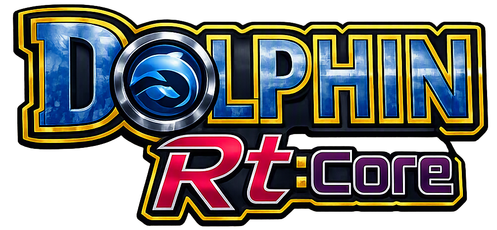

DOLPHIN
Rt:CORE
THE HANDHELD
UNDERGROUND
NO FAKE BENCHMARKS. NO PLUG-AND-PLAY MYTHS.

FIELD
UNIT
THE SIGNAL
INDEX.
Pick your route through the underground. Five sections, one connected project hub. The technical evidence stays real; the presentation gets its own personality.
RUN?GameCube + Wii · compatibility ratings · test history ↗ 03 / TUNING LABProfiles
with intent.Rt:Boost / Rt:Prime / Rt:Pure ↗ 04 / INI ARCHIVE1,914 files.
One tunnel.GameSettings database, workshop, overrides ↗ 05 / FIELD MANUALFirst boot.
No folklore.Andromeda setup / recovery / validation ↗ 06 / ENGINEERING ARCHIVERead the
source notes.50 tracked documents / troubleshooting ↗
Dolphin Rt:Core v12.0.0
Published · muOS 2606.0 Andromeda stable family
The muOS update package does not include the Dolphin emulator executable. Pair the AArch64 binary with its matching Sys/ resources and firmware family; follow the Quick Start before installing.
DOES IT
ACTUALLY RUN?
Skip the vague “works great” comment. Each report belongs to a game ID, region, device, firmware, build and profile — with boot, playability and field notes kept separate.
WORLD
DATA
IN THE CURRENT DATASET
Every claim gets a context.
Search game titles or six-character IDs, compare regions, filter by device and muOS version, inspect rating distributions, save favourites and share a filtered view. Open a game to see its individual test reports and the GameSettings attached to that title.
The database also accepts reproducible community reports. Unknown hardware details stay unknown — no invented FPS, firmware versions or “certified” claims.
ENTER COMPATIBILITY LAB ↗NO MAGIC
FPS SWITCHES.
Profiles are starting points, not magic. Their job is to make trade-offs explicit and give testers a reproducible baseline for each game and environment.
50 documents. No dead-end wiki maze.
Read practical setup guides, engineering references, input architecture and troubleshooting notes inside the Documentation Center. The index points to tracked source files so the portal follows the project instead of drifting away from it.
OPEN THE DOCUMENTATION CENTER ↗THE H700
FIELD MANUAL.
Before the first game, match the right firmware package, Dolphin binary, Sys resources and registration. Then test on the actual handheld. There is no shortcut around that.
Install it like an engineer.
The Quick Start walks through backup, Archive Manager, binary/resource pairing, registration, first launch and recovery — including the edge cases that tend to waste an evening.
OPEN THE FIELD MANUAL ↗NEITHER DOES THE DEBUGGER.ENTER THE Rt:STREAM NETWORK ↗
SWIPE / SCROLL SIDEWAYS / USE ← → TO TURN THE PAGE